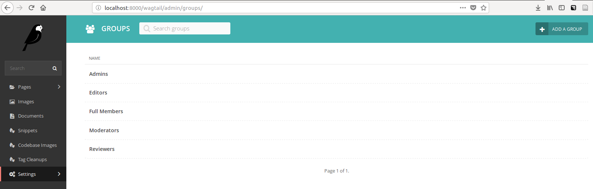
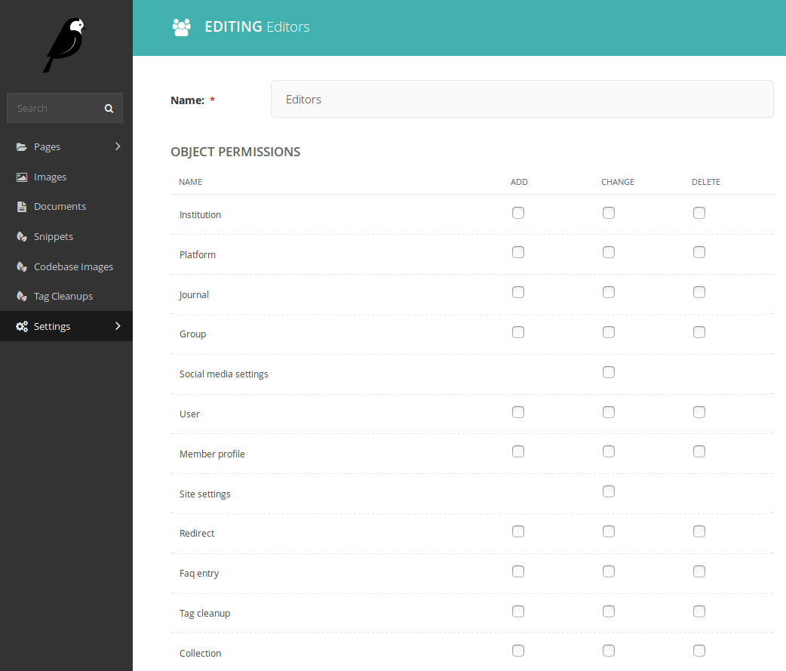
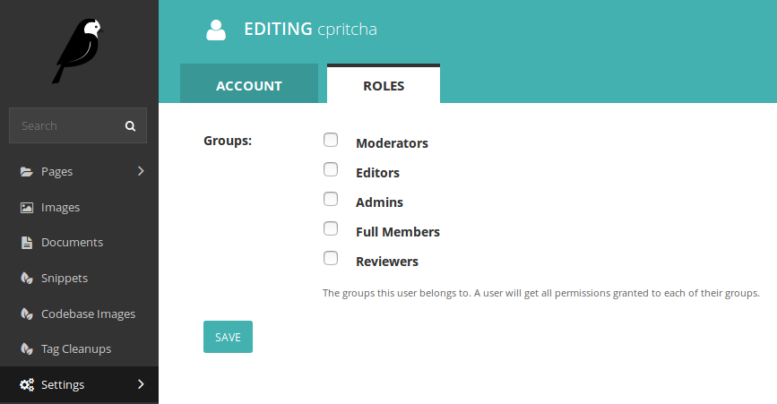

Administering CoMSES.net¶
Editor Role¶
Editors are users capable of modifying the content of pages on CoMSES.net
Assigning Editor Permissions¶
Click on the editor group at /wagtail/admin/groups/
Set page and object permissions to their appropriate values (only administrators should have permission to publish or delete pages)

Giving a User Editor Permission¶
Find the user you wish to assign the editor role to at /wagtail/admin/users/
Click edit on that user (should be at /wagtail/admin/users/:id)
Go to the roles tab
Check the editors group
Save your changes